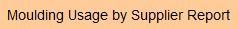
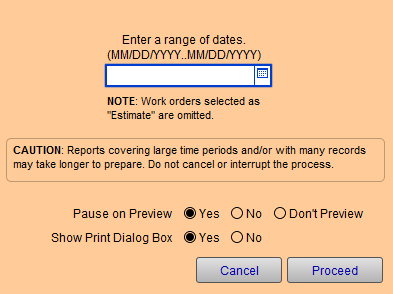
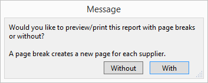
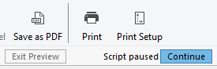
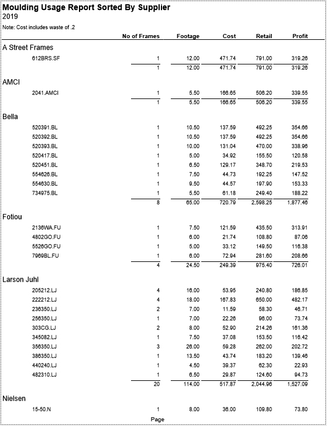

Moulding Usage by Supplier Report
OR
The Moulding Usage by Supplier Report generates a report of moulding in the Work Order file, sorted by Supplier listed in the Price Codes file, used in a found set or based on a date range.
-
The report provides: the moulding number, Quantity of frames made, Footage, Wholesale Cost*, Retail price and Profit.
-
Near the top of the report a note displays the waste factor being used in the calculation. This is based on the entry you made in the Main Menu > Work Order Options set up in the Waste factor when calculating cost field.
-
You may choose to have each moulding manufacturer print on separate pages.
* Cost includes Waste Factor. (This is based on the entry you made in the Main Menu > Work Order Options set up in the Waste factor when calculating cost field.)
How to Print a Moulding Usage by Supplier Report by Date Range
-
On the Main Menu, in the Work Orders section, click the Moulding Usage by Supplier Report button.

-
Enter a date range. Choose Pause on Preview if desired (this allows for a PDF document to be created).

Reports covering large time periods and/or with many records may take longer to prepare. Do not cancel or interrupt the process. -
Click the Proceed button.
-
A dialog box asks whether or not you want page breaks (this creates a new page for each supplier.)

-
Choose Without or With page breaks.
A print preview appears. -
Click Continue (top right) or Save as PDF.

If you have set FrameReady to display a Show Print dialog box, then click OK.
How to Print a Moulding Usage by Supplier Report by Found Set
-
Perform a find in the Work Orders file so that you have a Found Set.
See: Find Overview -
Click the Print Documents button.
-
Click the Moulding Usage by Supplier button.
Sample Print Out

© 2023 Adatasol, Inc.